Welcome to Kantan Japanese! If you're here, that must mean you're interested in learning the Japanese language. Our website aims to offer a structured course for learning Japanese similar to textbooks and is intended for use by all sorts of learners, from complete beginners studying on their own to university students. Before you get started with learning, let's help you get familiar with how to use our website so that you can more effectively learn Japanese with it!
Website Layout
Our website layout is fairly simple and straightforward, consisting of a navbar, quick navigation, page content, and a footer.
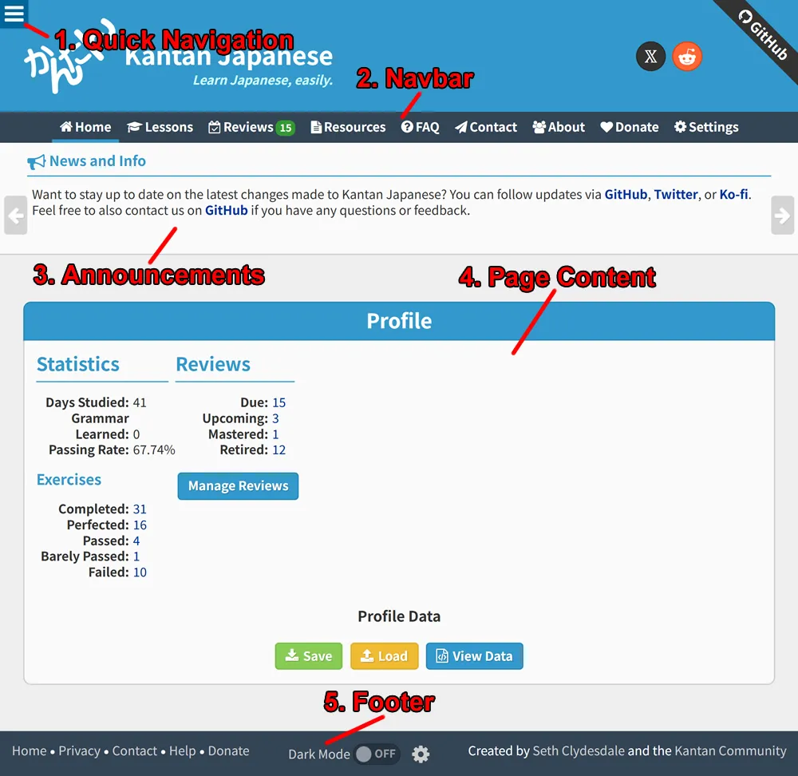
1. Quick Navigation
The quick navigation follows you around when you scroll, letting you easily navigate to other pages. Clicking the little menu icon in the upper left-hand corner will open a side menu. Depending on the page, the side menu content will either be a navigation bar or the lesson list if opened during an exercise/article under the lessons section. You'll be using this a lot, so make sure to get acquainted with it!
2. Navbar
This is your standard navigation bar available at the top of every page. It lets you quickly jump to any page, such as the "Lessons" page where you'll spend most of your time learning Japanese. If SRS is enabled, you can find your reviews in the navbar as well.
3. Announcements
Here you can find news about our website, such as new updates, giveaways, and more. You can also find additional tips and information by cycling through the announcements using the arrow buttons. Announcements will be labeled with little date tags to let you know if an announcement is new or old. Be sure to keep an eye on this if you want to stay up-to-date on everything that's happening on Kantan Japanese!
4. Page Content
Between the Navbar and Footer you'll find the page content. This is where you'll read articles, such as this one, or do exercises.
5. Footer
The footer serves as a secondary navbar that's accessible at the bottom of the page. You can also quickly toggle Dark Mode from here or manage your settings by clicking the cog icon.
Settings Manager
Kantan Japanese offers a highly customizable experience for learning Japanese and we're constantly adding new settings and features based on our students' feedback. Before you start using our website, we highly suggest checking out the Settings Manager by clicking the button below.
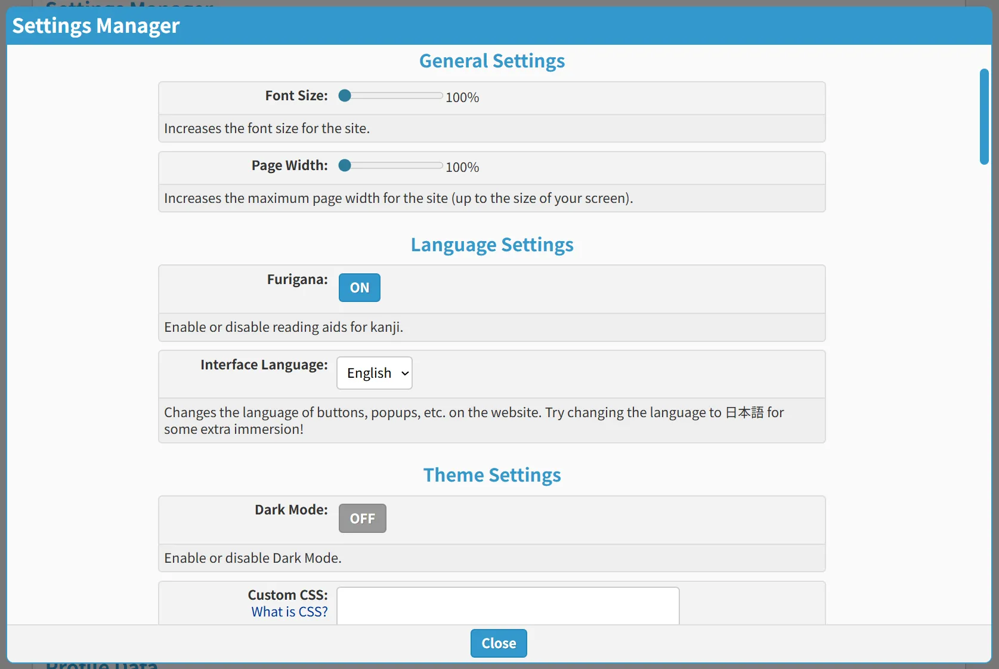
The Settings Manager will let you adjust the font size, change your furigana preference, enable dark mode, disable ads, and so on. There's also a plethora of settings for our exercises which you can experiment with later on. For now, we recommend checking out the following sections in the Settings Manager.
- Display
- General
- Privacy
You can access the Settings Manager at any time via the Quick Navigation, Navbar, Cog icon in the footer, or by pressing CTRL+ALT+M.
Profile Data
Kantan Japanese stores your Profile Data (e.g., reading progress, exercise scores, SRS data, etc.) locally on the browser/app. The perks of storing your data locally is that you don't require an account to save your progress and you can use Kantan Japanese completely offline while maintaining your progress, if you're using a non-web version. Essentially, you have complete control over your data!
The drawback, however, is that clearing your browser cache or deleting the app will delete your Profile Data as well, with no way to recover it. This is why we offer a way to download your profile data, so that you can back it up periodically on your computer, flash drive, cloud service, etc.
Exporting Profile Data
To download your profile data, open the Settings Manager, go to the Exercises section, and click the Save button for Save/Load Profile Data. This will download your profile data for Kantan Japanese so that you can back it up or transfer it to another device.
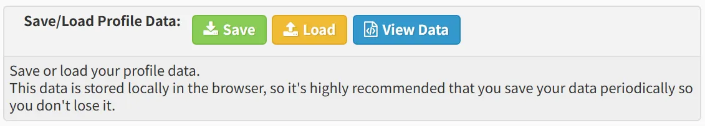
Additionally, to keep things simple, there will be a button at the end of exercises where you can download your profile data. This way you can keep your backup fresh without constantly visiting the Settings Manager.
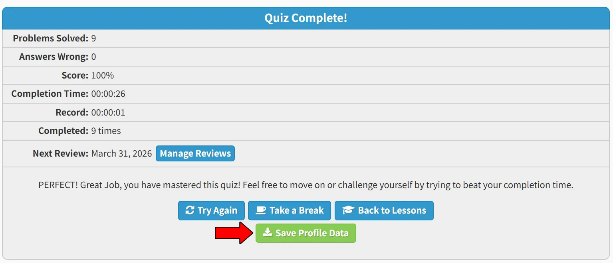
Importing Profile Data
If you want to transfer your profile data to another device or revert to an earlier backup, simply copy over your profile data file and follow the previous steps above for the Settings Manager, but instead of clicking "Save" click the Load button for Save/Load Profile Data and select your file to import your profile data.
Exporting/Importing Settings
Last but not least, you can also export/import your settings for the website/app. This way if you have a very specific setting setup, you can transfer it to another device without having to tinker with the settings again. To export/import your settings, open the Settings Manager, scroll to the VERY bottom, and click Save or Load for Save/Load Settings.
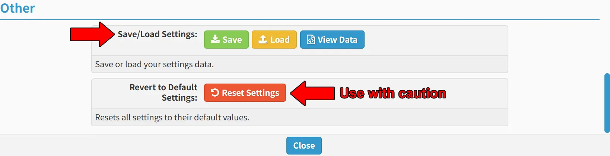
If you're not happy with your current settings and wish to revert to the default settings, you can use the Revert to Default Settings option just below the Save/Load Settings option. Just remember that your current settings profile will be lost if you do not back it up, so use this setting with caution!
Lesson Structure
We take a structured approach to learning Japanese and each lesson consists of a few sub-sections of study. A typical lesson on Kantan Japanese is usually structured in the following manner.
- Lesson 1
- Vocabulary - Lists and exercises for studying new words and phrases introduced for this lesson.
- Grammar - Explanations on new grammar points introduced for this lesson.
- Practice - Exercises for practicing the grammar taught in the prior section.
- Kanji - Lists and exercises for studying the Kanji introduced for this lesson.
Each sub-section is listed with a number in its title and it is suggested that you follow this order while studying. For example, in Lesson 0, you would start with reading the content in Introduction, then learn Hiragana, and Katakana once you're done with the Hiragana section, and so on...
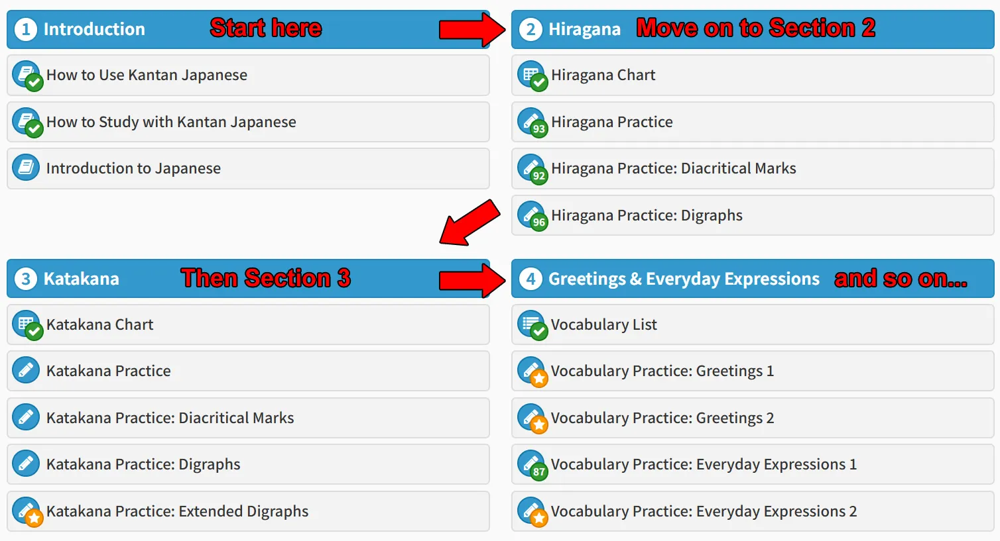
Of course, you're free to follow your own order, too, such as studying Vocabulary and Kanji first before proceeding to study grammar. The most important thing is that you do what you're most comfortable with, take your time, and ensure that you understand the content introduced in each lesson!
Progressing through Lessons
At this point you should have a much better idea of how our website works, so the last and final thing you need to know is how to progress through lessons! There are two ways that you can proceed:
-
Click the quick navigation button in the top left > Select the next page in the list, such as "How to Study with Kantan Japanese." The page that you're currently on will be highlighted in blue.
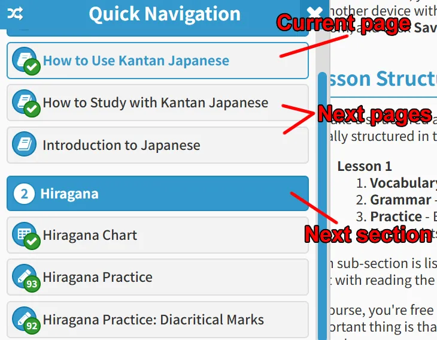
-
Click the blue buttons at the bottom of the page to navigate to the next or previous page.
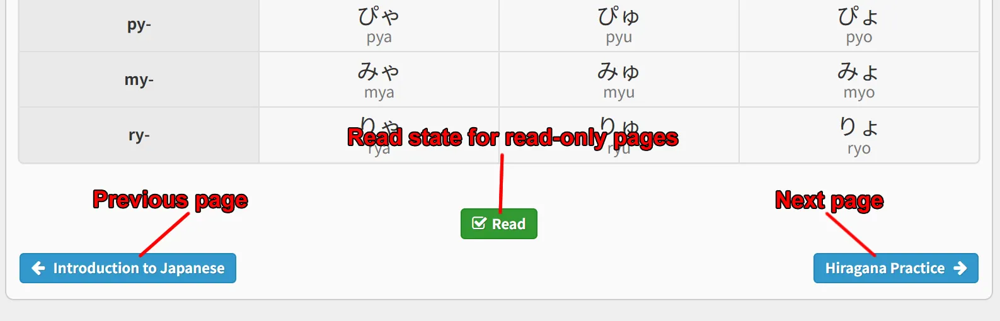
You may have also noticed the "Read" button at the bottom along with the navigation buttons. This button can be used to mark read-only pages, as "Read" or "Unread." By default, pages are automatically marked "Read" when you've reached the end of the content, such as what you're reading right now. If you prefer to mark pages "Read" manually, this behavior can be changed via the Settings Manager under the General section.
Exercise Layout
When you do an exercise for the first time on our website, you may be prompted with the window below if an exercise contains multiple ways to do it.
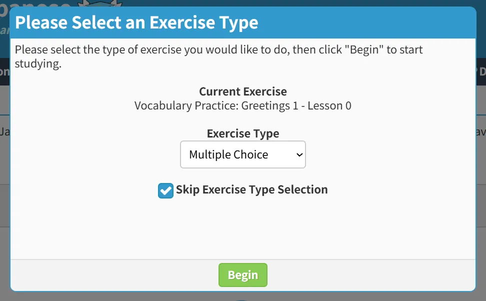
For this, simply select how you would like to do the exercise, then click the "begin" button to begin the exercise. Additionally, you can tick the "Skip Exercise Type Selection" checkbox so you don't see this prompt when doing exercises anymore. If you tick this checkbox, the selected exercise type will be the one you prefer or the exercise's default type.
Once you begin the exercise, you should see a layout similar to the one below.
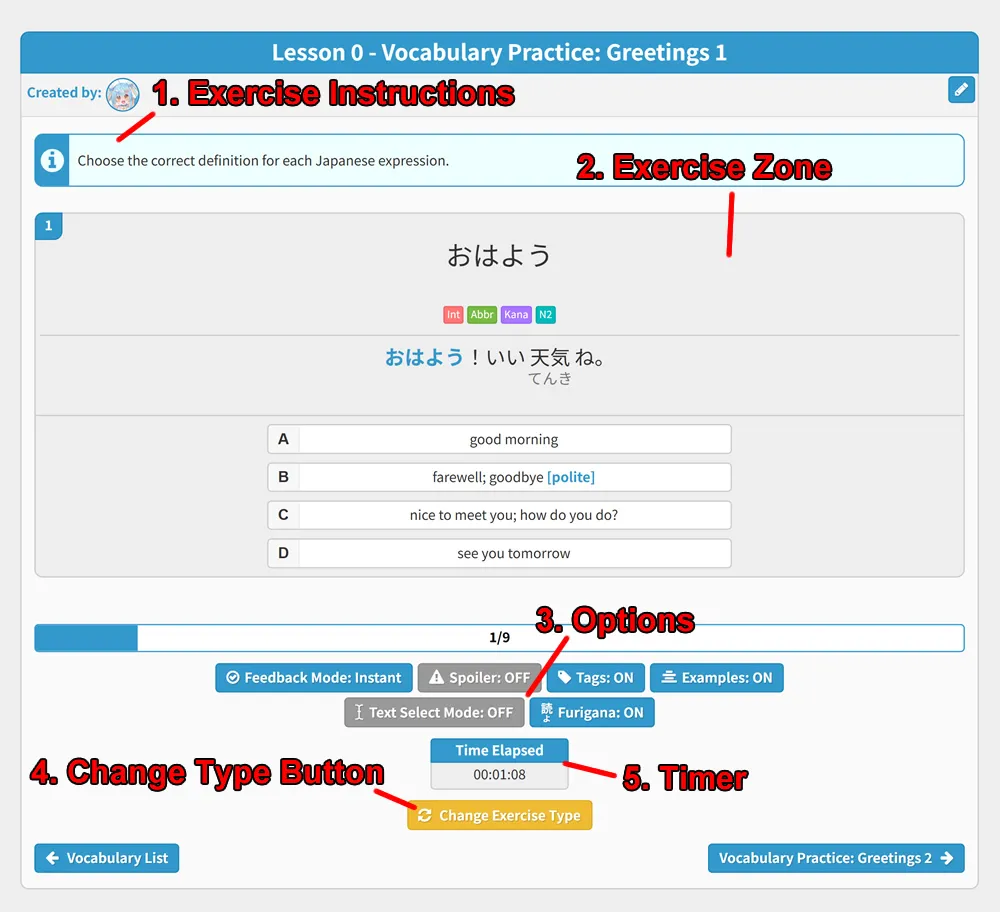
1. Exercise Instructions
Here you can find general instructions for the exercise that you're doing that tell you what to do. Some exercises, like written exercises may contain further instructions for you to follow.
2. Exercise Zone
This is where you do the exercise. This varies depending on the type. In the image above, it is a multiple choice layout, but we also have other types, such as drag and drop, written, and more.
3. Options
Here you can find options for tweaking how our exercises work. Each exercise type has different options, but one you might see across all of them is the furigana toggle button which can be used to toggle the display of furigana (kanji reading aids). Feel free to play around with these options and see what works for you!
4. Change Type Button
This button is used for changing the exercise type for exercises that contain multiple ways to practice. If you want to try practicing the exercise you're doing in a different way, click this button to change the exercise type! Please note, however, that your current progress will be lost if you change the exercise type mid-exercise, so only change the type at the beginning or end of an exercise if you don't want to lose your progress.
5. Timer
The timer shows how much time has elapsed for the current exercise. This will only stop once the exercise has been completed and can be used as a metric to see how much you've improved if doing the same exercise multiple times.
Exercise Results
When you complete an exercise, you'll be met with the results screen below.
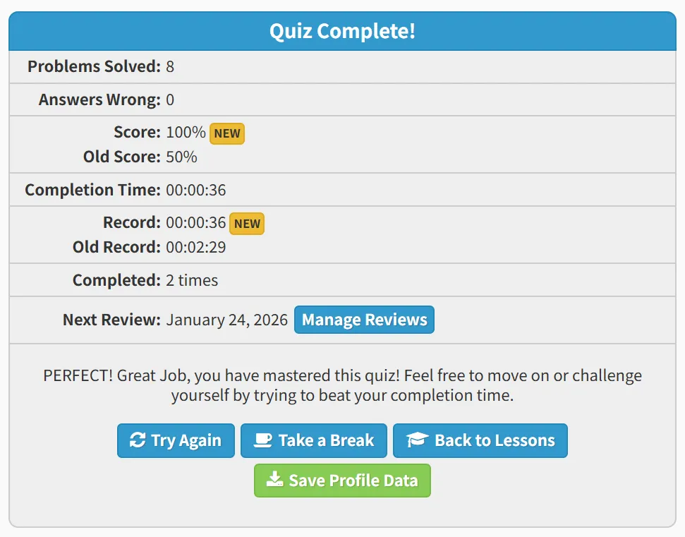
This will show you how you did in an exercise, from problems you got wrong, to how fast you did the exercise, along with your previous records. Additionally, if you have our review system enabled, you will see when your next review for this exercise is.
Aside from stats, there are also buttons to try again, take a break, save your profile data, or to return to the lessons index. I recommend saving your profile data as often as possible after each exercise, but every 5 or 10 exercises is fine too.
Review System
On Kantan Japanese we have a Spaced Repetition System (SRS) which is enabled by default, and whenever you do exercises on our website they're automatically added to your review list here. If you're unfamiliar with SRS, it is basically a review system where you review the same material over increasingly long intervals and is supposed to help with memorization.
Below is an example of how our review system looks.
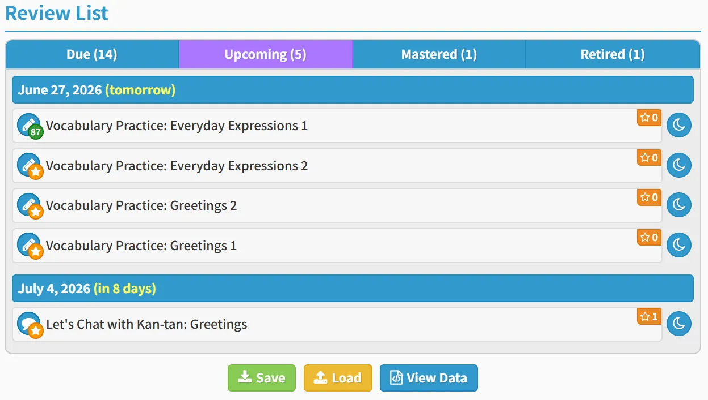
Due
This tab shows a list of all exercises that are due for review. It is recommended to do exercises in this list as soon as they appear, but you're free to tackle them at your own pace. If there are exercises that you don't want to review, click the moon button to retire them from reviews.
Upcoming
This tab shows your upcoming reviews. They're grouped by dates, so you can see how many days until you review these exercises and on what day. Doing exercises in this list will NOT change the review date, so you're free to do a quick review of any exercises in this list if you want to, though It's still recommended to wait until the review date, however.
Mastered
This tab shows what exercises you have mastered. An exercise is mastered when you have successfully reviewed it 5 times.
Retired
This tab shows what exercises that you have retired from review. These exercises won't show up in your due or upcoming lists if you happen to do them. Of course, if you DO want to review an exercise in this list, simply click the undo arrow next to it to revive it for review. Lastly, you can also remove ALL exercises from the retired list by clicking "Clear Retired Reviews."
That should be all you need to know about using our website! Go ahead and click the "How to Study with Kantan Japanese" button below to move onto the next page.